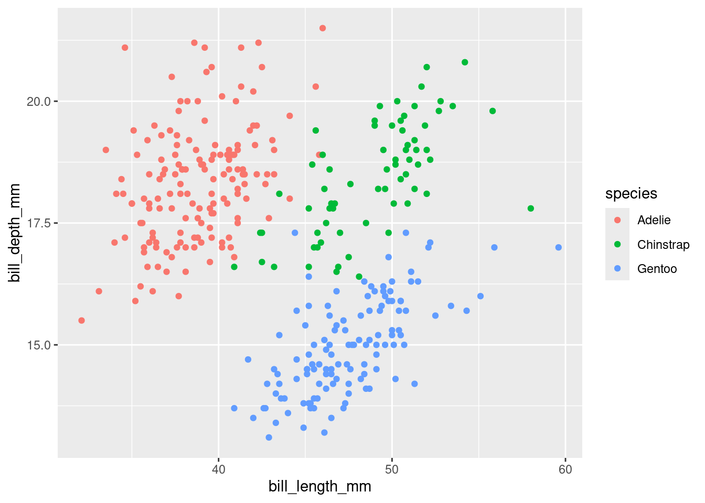
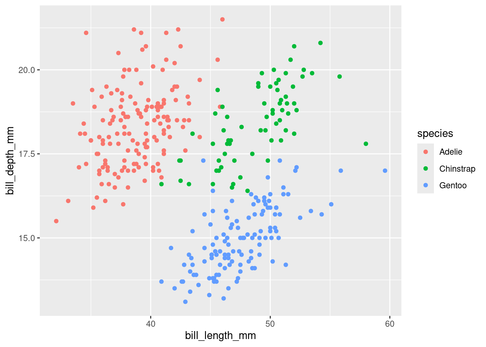

Warning: Removed 2 rows containing missing values or values outside the scale range
(`geom_point()`).
Graphics are one of the primary tools for science or data communication, and are powerful because they make use of our visual system in a way that off-loads much of the work of processing the data, freeing cognitive resources up to consider the content rather than the representation. Unfortunately, not everyone can leverage their visual systems in this way, due to differences in the visual system or in information processing systems within the brain. There are a wide range of issues which may impact how effectively people can use graphics, including colorblindness, poor visual acuity, blindness, dyslexia, dyscalculia, and even differences in data literacy and numerical literacy. In some sense, it can be useful to go through the introspection process when looking at a graph, and consider what perceptual and cognitive resources are required to complete each step when looking at a chart. Ultimately, as scientists and people working with data, we need to work to make our data representations accessible. The specifics of which populations we focus on, and how we adapt existing representations (or create new ones) are based on the target audience(s), and will differ across different disciplines. For instance, if you are designing graphics to be used in Air Traffic Controller trainings, you likely do not need to accommodate Blind and Low Vision (BLV) individuals or even consider color-blindness. However, if you are creating graphics to be consumed by a general web audience, it is important to consider a range of visual impairments and accommodations.
This is an active area of research in data science, information visualization, and design. It is always useful to see what new solutions have come out recently, because there are new developments in this area on a regular basis.
One of the simplest ways to increase accessibility of graphics is to ensure that they meet basic guidelines for discoverability and distinguishability. Discoverability ensures that screen-reader users know that the graphic exists; this requires designing the entire web page with these users in mind, but is critical to ensuring equal access to information for blind and low-vision users. Creating graphics which adhere to contrast, color selection, font size, and other distinguishability guidelines helps low-vision people, those with sensory processing issues, and people with colorblindness use existing data representations effectively.
When retrofitting an existing page for accessibility, it may not be possible to make charts and graphics fully accessible to individuals who are blind or using screen-readers. In these cases, it is important to write good alt-text for each graph that is intended to convey information (it is fine to skip alt-text for purely decorative images).
Good alt-text is:
Graphs are some of the hardest images to fully describe in alt-text, in part because providing the same information that the image provides may require thousands of words, full data tables, or other accommodations. The alt text field in HTML does not allow for paragraphs, line breaks, and other structural elements; as a result, it is often better to include a short description in the alt-text field and a longer description (or table) as part of the web page source. Linking the alt-text and the longer description together may facilitate keyboard navigation between the two, making the navigation process less cognitively intensive for screen reader users.
The entire web-page structure is important to consider when designing to include screen-reader users. Sighted users may be able to take in the web page structure visually and determine which elements to focus on; screen reader users have to take in the page structure audibly, and in sequence. Some users describe it as “viewing a web page through a straw”.
It is important to provide a contextual overview first, and then provide specific data and details in a structured hierarchy. We can update the “information seeking mantra” of overview, zoom and filter, details on demand to “gist”, “supporting methods” (contextual information), and “details” (actual data content). The structure of the page needs to support understanding when navigated hierarchically. Information embedded in visual design themes (font sizes, colors, nesting, space) need to be explicitly accessible via aria- fields to be accessible to screen reader users.
In addition to the information below, which includes some web references, there is a lovely series of Observable posts on accessibility, contrast, and color choice for data visualization. Check it out!
We’ll first approach color selection with color impairment (aka “colorblindness”, though most color impaired people can see some colors) in mind, though many of the considerations here factor into contrast considerations later. There are several approaches to accommodating color impairment:
Avoid red and green combinations. This helps but is not sufficient, particularly for those who have trouble with red and blue, rather than green.
Use palettes designed to be “colorblind-friendly”, such as David Nichol’s, Okabe-Ito’s, Paul Tol’s. Colorbrewer’s colorblind friendly palettes are less useful than these options.
Design your graphic so that it is functional in greyscale. This will make it safe for all types of color impairment.
Dual-encode colors with other attributes, such as shape or linetype.
It can be difficult to fully accommodate those with color impairment, particularly when working with graphics that use many different hues. Keep in mind that even people with full color vision cannot keep more than \(7 \pm 2\) items in working memory - so using many different colors is problematic for everyone, not just for those with impaired color vision.
It can be hard to see content that does not have much contrast against the background. People with low vision rely on contrast even more than the rest of the population; in addition, individuals with color impairment tend to rely on contrast cues to determine whether ambiguous colors are, in fact, different.
W3C (World Wide Web Consortium) creates Web Content Accessibility Guidelines (WCAG) to provide a standard of accessible online content. These guidelines have recommendations for creating alt-text, how to ensure accessibility of different types of media, and standards for how to make content distinguishable.
WCAG guidelines are provided on a scale from A (basic accessibility) to AAA (most accessible).
You can use https://www.accessibilitychecker.org/ to check the compliance of your website.
Chartability is a set of heuristics for ensuring accessibility of data visualizations (and the pages that contain them). It’s created by BLV designers and is designed to help you locate accessibility barriers in data visualizations. They maintain an audit workbook that has tests that help identify design failures.
In general, charts created as images, which are the default in many systems such as ggplot, matplotlib, and SAS, require alt-text, inclusion of data tables, and other modifications that still do not produce full accessibility. By contrast, d3, Observable.js, Highcharts.js, and other svg-based web graphics allow for some navigation within the chart by screen reader users. However, these tools still require some extra planning to design charts that are accessible and well-formatted for screen-reader users.
The OLLi project works within Observable and Vega/VegaLite visualizations to create a navigable, hierarchical tree for keyboard navigation and descriptions.
Let’s consider three different pages produced using quarto to showcase the penguins data.
Warning: Removed 2 rows containing missing values or values outside the scale range
(`geom_point()`).
data=FileAttachment("../data/penguins.csv").csv({typed: true})
Plot.plot({
marks: [
Plot.dot(data, {x: "bill_length_mm", y: "bill_depth_mm", fill: "species"})
],
color: {legend: true}
})Low vision support
Level 1: Basic compliance/communication
Level 2: Engagement